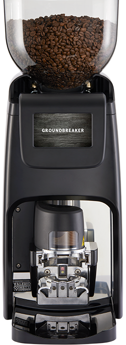
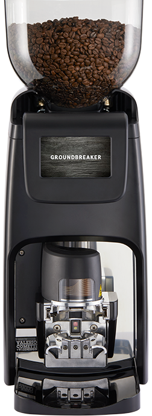
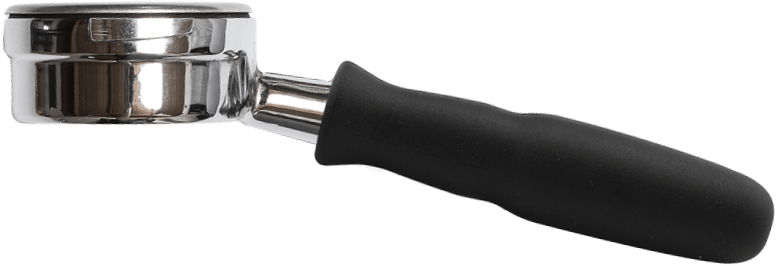
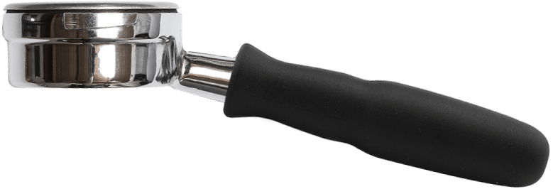

Бариста — профессия мечты
Человек, выполняющий функции бармена, но работающий не с алкоголем и коктейлями, а с кофе или напитками на основе кофе.
 ta
ta
Человек, выполняющий функции бармена, но работающий не с алкоголем и коктейлями, а с кофе или напитками на основе кофе.
 

 

Естественно, что любители кофе сразу обращают внимание на такую профессию. Но что ещё привлекает людей?
Атмосфера. У каждой кофейни она неповторимая. В какой-то кофейне люди собираются, чтобы обсудить последние
новости, в другой вы найдёте фрилансеров, работающих за чашечкой кофе, а есть небольшие станции, куда люди
забегают взять напиток с собой и направляются дальше по своим делам.
Однако их все объединяют запах
выпечки и аромат кофе, уникальная музыка, и, конечно же, баристы. И быть частью этой атмосферы крайне
привлекательно.
Бариста готовит и натуральный кофе из зерен, и напитки на его основе (например, ристретто, каппучино, латте, американо, различные коктейли и др.).
Существует шесть основных методов варки кофе: заливка водой, вываривание, фильтрование, капельный и заваривание под давлением. Эспрессо получается путем заваривания под давлением, именно этот напиток является основным в меню всех кофеен города и большинства ресторанов, кафе, баров.